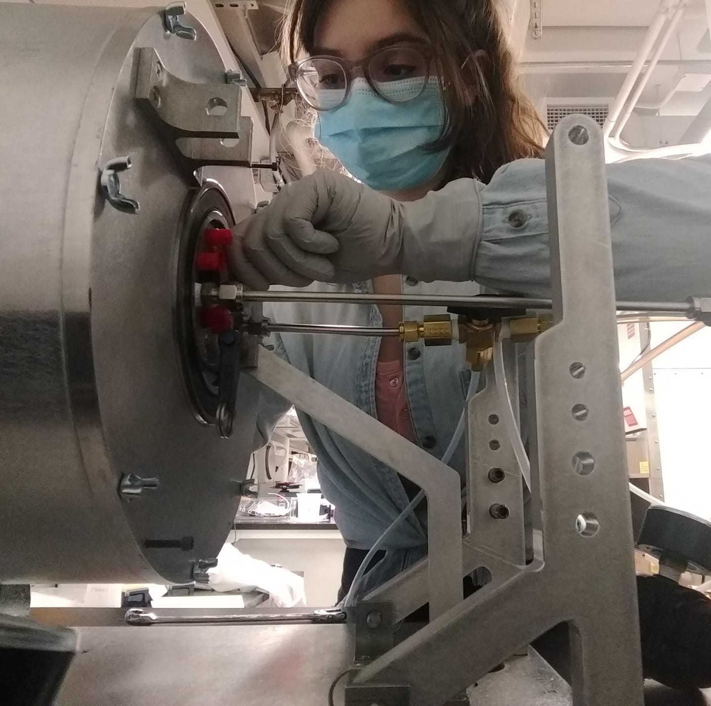

Student Speakers
Devan Solanki
Biocement from the ocean: Hybrid microbial-electrochemical mineralization of CO2
Increasing concentrations of atmospheric CO2 are leading to rising global temperatures and extreme weather events. However, the most prominent method of removing CO2 via direct air capture remains cost-prohibitive. Oceans sequester carbon through several naturally occurring carbon dioxide removal (CDR) processes, one of which includes microorganisms that utilize dissolved inorganic carbon (DIC) in their metabolic processes. Atmospheric CO2 is in dynamic equilibrium with DIC at the ocean's surface. Thus, ocean-based CDR can function to capture carbon from the air indirectly. This work discusses a hybrid method that combines primary CO2 capture via the growth of autotrophic microorganisms (i.e., photosynthetic cyanobacteria) and microbially induced carbonate precipitation. Carbon fixation and carbonate precipitation can be co-optimized using bipolar membrane electrodialysis (BPMED) devices , which generate seawater with an adjustable pH. We examine the scale-up potential for naturally produced bio-carbonate composite material and compare its production with published ocean CDR strategies for reducing anthropogenic CO2 emissions.
Biography
Devan Solanki is a PhD candidate working under the guidance of Professor Shu Hu. Devan received his bachelor's degrees in chemical engineering and chemistry from Rutgers University where he worked with Professor Chuck Dismukes on bio-inspired catalysis for energy applications. Here, Devan works in on multifunctional coatings and electrocatalysts fabricated by Atomic Layer Deposition. Devan hopes to work in the energy policy space after graduation.
Mary Kate Lane
What to Expect When Expecting in Lab: Green Chemistry Resources for Pregnant Researchers in the Chemical Laboratory
Despite receiving approximately half of science, technology, engineering, and math (STEM) baccalaureate degrees, women are increasingly underrepresented as career stages advance, often referred to as the “leaky pipeline.” There is particularly high attrition in the midcareer—a time when many women have children—suggesting a component of the leaky pipeline could be attributed to challenges surrounding pregnancy and parenthood. This notion is supported by a 2019 study by Cech and Blair-Loy that showed 43% of female scientists left full-time STEM employment after the birth of their first child, as opposed to 23% of male first-time parent scientists and 24% of childless women scientists. In an effort to retain and support women and parents in chemical careers, we present our recent review of unique risks and resources for pregnant researchers in the chemical laboratory, where a chemical laboratory is defined as an industry or academic laboratory engaging in primary research in fields like chemistry, engineering, or medicine, but excluding biological work with substances such as pathogens or live organisms. We examine lab relevant doses for commonly encountered hazards for pregnant lab workers, including chemical hazards (organic solvents, heavy metals, engineered nanomaterials, and endocrine disruptors), radiation hazards (ionizing radiation producing equipment and materials and non-ionizing radiation producing equipment), and other hazards related to the lab environment (excessive noise, excessive heat, psychosocial stress, strenuous physical work, and/or abnormal working hours). Inspired by the principles of Green Chemistry and Green Engineering, reducing hazard is the most promising route to eliminating or at least minimizing risk—as it is an intrinsic and constant property of chemicals and processes—whereas exposure controls can and often fail. Therefore, implementing green chemistry could directly benefit pregnant researchers in a laboratory setting. This oral presentation will share the main findings of this review, highlight many green chemistry tools, and indicate where green chemistry can aid in furthering creating safe laboratory spaces for pregnant researchers.
Biography
Mary Kate's research utilizes supercritical fluids as green solvents for biorefinery and nanoparticle synthesis applications. Prior to graduate school, Mary Kate gained experience in a diverse set of industry and research roles (interning in oil refining and natural gas distribution; research in ultracapacitor development, biofuel synthesis, and water treatment) that motivated her to pursue a research career focused on green chemistry and sustainability.
Outside of the lab, Mary Kate applies Green Chemistry to increase inclusion. For example, she led the publication of the recent literature review, “What to Expect When Expecting in Lab: A Review of Unique Risks and Resources for Pregnant Researchers in the Chemical Laboratory.”
Zhanhong (Aurora) Xiang
Sooting tendencies of phenolic hydrocarbons from lignin conversion and upgrading
 Phenolic hydrocarbons are produced in large quantities when lignocellulosic biomass is processed into fuels. Traditionally these phenols have been viewed as undesirable due to properties such as their acidity, so they are removed during subsequent fuel processing. However, they also have beneficial fuel properties such as high energy density and low sooting tendencies. Soot emissions are the second largest source of global warming and contribute to ambient fine particulates that cause millions of deaths annually. In this work quantitative sooting tendencies were measured for a wide range of phenolics, including benzenediols and benzenetriols, alkylphenols (e.g., n-propylphenol), methoxyphenols (e.g., guaiacol and syringol), allylphenols (e.g., eugenol), and phenolic aldehydes (e.g., vanillin). The sooting tendencies were determined by doping the test compounds into the fuel of a methane/air nonpremixed flame at low concentrations (typically 1000 ppm) and measuring the resulting soot concentration. The absolute soot concentrations were converted into yield sooting indices (YSIs) by rescaling them relative to n-heptane and toluene reference fuels. Many phenolics are solids at room temperature, so they were dissolved in ethanol and then the liquid solutions were injected into the flame. The results confirm that the oxygen in phenols reduces soot formation relative to the analogous regular hydrocarbons. For example, 1,3,5-trihydroxybenzene has a YSI of 9.7 versus 100.3 for benzene. The sooting tendencies depend strongly on molecular structure parameters such as the position of the hydroxyl group relative to other sidechains, the length of the other side-chains, branching in the other side-chains, etc. These results provide a basis for identifying specific phenols that can be produced as renewable fuels from biomass while combining low soot emissions with acceptable values of other fuel properties.
Phenolic hydrocarbons are produced in large quantities when lignocellulosic biomass is processed into fuels. Traditionally these phenols have been viewed as undesirable due to properties such as their acidity, so they are removed during subsequent fuel processing. However, they also have beneficial fuel properties such as high energy density and low sooting tendencies. Soot emissions are the second largest source of global warming and contribute to ambient fine particulates that cause millions of deaths annually. In this work quantitative sooting tendencies were measured for a wide range of phenolics, including benzenediols and benzenetriols, alkylphenols (e.g., n-propylphenol), methoxyphenols (e.g., guaiacol and syringol), allylphenols (e.g., eugenol), and phenolic aldehydes (e.g., vanillin). The sooting tendencies were determined by doping the test compounds into the fuel of a methane/air nonpremixed flame at low concentrations (typically 1000 ppm) and measuring the resulting soot concentration. The absolute soot concentrations were converted into yield sooting indices (YSIs) by rescaling them relative to n-heptane and toluene reference fuels. Many phenolics are solids at room temperature, so they were dissolved in ethanol and then the liquid solutions were injected into the flame. The results confirm that the oxygen in phenols reduces soot formation relative to the analogous regular hydrocarbons. For example, 1,3,5-trihydroxybenzene has a YSI of 9.7 versus 100.3 for benzene. The sooting tendencies depend strongly on molecular structure parameters such as the position of the hydroxyl group relative to other sidechains, the length of the other side-chains, branching in the other side-chains, etc. These results provide a basis for identifying specific phenols that can be produced as renewable fuels from biomass while combining low soot emissions with acceptable values of other fuel properties.
Biography
I am currently a Year 1.8 Ph.D. student in Chemical and Environmental Engineering. My research focuses on measuring soot emissions from renewable fuels and studying NH3 combustions. During my free time, I enjoy cooking, watching movies and hanging out with my friends! And I am definitely a dog person!
Ruiqi Yang
High-temperature Superconductivity in an induced-pressure linked-graphene oxide confinement system
Superconductor technology has various applications in electricity generation, energy storage, power transmission, and even in medicine. Raising the superconductivity transition temperature has been the foremost pursuit for superconductivity research. Recent works have shown that high-temperature superconductivity (around 200 K) can be achieved by applying high pressures (around 150 GPa). However, this kind of finding is hard to exploit in the real world because it requires materials to be compressed to extreme pressures constantly. We have been exploring using confinement systems to induce pressure inside the material so that properties generated at high pressure can be retained after the pressure is relieved. By inserting nanoparticles into our confinement system, which is constructed by linking graphene oxide (GO) layers with dithiol linkers, pressure can be induced by the strain generated within the system. We are able to determine and control the spacing between the GO layers by using different concentrations and types of linkers, and the induced pressure can be quantified using Raman spectroscopy. We are currently investigating the effect of different species and sizes of the doped nanoparticles on the resultant superconductivity with the help of XPS, XAFS, XRD, and SQUID.
Biography
My name is Ruiqi Yang, and I go by Rachel. I am from Shanghai, China. I obtained my bachelor's degree in Chemical Engineering at the University of Illinois at Urbana-Champaign. I am currently a second-year Ph.D. student in Dr. Lisa Pfefferle's Group. My research interests are in nanomaterials with applications in superconductivity and catalysis. Outside my research, I enjoy hiking, playing musical instruments, and watching movies.
David Kim
Pulsed electrolysis for long-term water treatment
Electrocatalytic treatment of wastewater has emerged onto the limelight of scientific interest, yet their long-term viability remains largely in the dark. In this talk, I will showcase the efficacy of pulsed electrolysis to bolster resilience to impurities and overall longevity by examining real wastewater constituents, assessing catalyst design, and optimizing operational parameters. Using H2O2 electrosynthesis as the target reaction, our systematic pulsing framework unveils superior performance for a boron-doped carbon catalyst with high selectivity (80%) and near complete recovery in overpotentials even in the presence of highly detrimental metal impurities.
Biography
David is a fifth-year PhD student in the Kim group. His research interests involve enhancing the long-term performance of electrocatalysts for wastewater treatment purposes. Outside of the lab, he loves watching football and spending time with his sassy dog, Choco.
Yazhen Xue
Constructing hierarchically-structured nanocomposites from multicomponent mixed-graft block copolymers and functional inorganic fillers
Nanocomposites hierarchically assembled with spatially-defined polymeric and inorganic building blocks ubiquitously exist in naturally-evolved biological systems, providing a versatile platform for the integration of multiple properties into a single material. However, the inability to scalably and efficiently synthesize hierarchical structures as well as the lack of orthogonally recognized interactions between diverse components greatly limited the scope of synthetic building blocks in the manufactured materials. To address these challenges, we leveraged the multicomponent mixed-graft block copolymer (mGBCP) as the matrix to host and guide the residence of the inorganic fillers. Intramolecularly defined block interfaces of the rationally-designed mGBCPs promoted the efficient microphase-separation of multiple components and stabilized the orthogonally-orientated super- and substructures. To demonstrate the universality of this method, inorganic fillers spanning from atomic scale luminescent metal ions, subnanoscale metal clusters, to nanoscale metal particles were introduced to the mGBCP matrix. With judiciously engineered intermolecular interactions, the inorganic components resided in select domains of the hierarchically-structured polymer matrix, leading to diverse and well-defined morphologies. We envision that this novel hierarchal co-assembly strategy will accelerate the material design for advanced applications in optics, conductors, and catalysis.
Biography
Yazhen is a fourth-year graduate student in Prof. Mingjiang Zhong's lab (since 08/2019). She received a B.S. in Chemistry from Peking University, Beijing, China (2015-2019) under Prof. Jianbo Wang. She did research as a visiting student at the University of Chicago, IL (2018) with Prof. Guangbin Dong. Yazhen's research interests involve the controlled synthesis of mixed graft block copolymers, fabrication and applications of polymer-inorganic nanocomposites, synthesis of brush-on-brush polymers
Darryl Angel
Reducing Viral Infections from Bulk Indoor Air
Reducing the concentration of viral aerosols among indoor settings is essential towards decreasing infectious risk. Common building viral mitigation approaches, including ventilation, filtration, and in-duct ultraviolet germicidal irradiation, are limited by air exchange rate. Thus, treating the bulk air of buildings' occupied spaces with a non-toxic disinfectant is a more ideal strategy for reducing airborne infection. Bipolar ionization (BPI) is one such emerging technology designed for the treatment of bulk indoor air. BPI has the potential to reduce airborne viral transmission through two proposed mechanisms: by facilitating particle agglomeration, consequently increasing deposition rates, and via viral inactivation, through the degeneration of viral surface proteins from ion-mediated reactions. This research presents the first reported determination of airborne virus removal rate coefficients resulting from BPI exposure. The total decay rate of aerosolized bacteriophage Ф6, a surrogate for enveloped respiratory viruses, increased from 0.15 1/min to 0.22 1/min when bipolar ion exposure was varied from 4.00 x 103 ions/cubic cm to 2.39 x 106 ions/cubic cm, respectively, at ~50% relative humidity. Similarly, the rate of infectious Ф6 decay increased from 0.31 1/min to 0.50 1/min when bipolar ion concentration was increased under the same experimental conditions listed above.
Biography
Darryl is a fourth-year Ph.D. candidate studying Environmental Engineering in the lab group of Dr. Jordan Peccia. Prior to Yale, Darryl received her bachelor's degree in Environmental Science and Geographic Information Systems at Binghamton University, where she conducted research in Geomicrobiology. She now focuses her research efforts on monitoring and mitigating airborne viral exposure in indoor environments.
Haoqing Su
Photocatalytic Overall Water Splitting by Uniform Narrow-Bandgap Semiconductors
 Photocatalysis has been shown as a promising fuel generation method due to its potential for low cost and high scalability. Narrow-bandgap semiconductors are good candidates for photocatalytic fuel production because of their high quantum efficiency; however, the instability and the small driving force for charge separation inhibit their broad utilization for solar hydrogen generation. Because of these factors, researchers have been struggling with making a uniform narrow-bandgap photocatalytic panel. To surmount these limitations, we developed conformal coatings with attached nanoscale catalysts enabling gallium phosphide (GaP) and indium gallium phosphide (InGaP) wafers for overall water splitting. With the atomic layer deposition, the coating of high conductivity was grown on the semiconductors to protect them and tune their band edge position facilitating high-stability and high-efficiency water splitting. With E-beam lithography, the cathodic and anodic catalysts were deposited with certain patterns to optimize the charge separation processes. Designing with these techniques, we successfully achieved hydrogen and oxygen coevolution of ~0.05% solar to hydrogen efficiency with GaP/(Ti,Mn)Ox/Ir/Rh@CrOx and InGaP/GaN/IrOx/Rh@CrOx panels.
Photocatalysis has been shown as a promising fuel generation method due to its potential for low cost and high scalability. Narrow-bandgap semiconductors are good candidates for photocatalytic fuel production because of their high quantum efficiency; however, the instability and the small driving force for charge separation inhibit their broad utilization for solar hydrogen generation. Because of these factors, researchers have been struggling with making a uniform narrow-bandgap photocatalytic panel. To surmount these limitations, we developed conformal coatings with attached nanoscale catalysts enabling gallium phosphide (GaP) and indium gallium phosphide (InGaP) wafers for overall water splitting. With the atomic layer deposition, the coating of high conductivity was grown on the semiconductors to protect them and tune their band edge position facilitating high-stability and high-efficiency water splitting. With E-beam lithography, the cathodic and anodic catalysts were deposited with certain patterns to optimize the charge separation processes. Designing with these techniques, we successfully achieved hydrogen and oxygen coevolution of ~0.05% solar to hydrogen efficiency with GaP/(Ti,Mn)Ox/Ir/Rh@CrOx and InGaP/GaN/IrOx/Rh@CrOx panels.
Biography
Haoqing Su is a fourth year PhD student at Professor Shu Hu's lab. He received his B.S. degree in Physics at Nankai University and start working on energy conversion and storage since then. At Yale, he is interested in solar fuel production with semiconductor. Currently, his research is focusing on the interface characterization, catalyst optimization and photoabsorber protection for photoelectrochemical and photocatalytic solar hydrogen generation.
Tiago dos Santos Domingues
Estimating Anisotropic and position-dependent diffusivity using Molecular Dynamics simulations
 The structure and function of many materials are strongly impacted by confinement as the properties of confined states of matter can deviate considerably from their bulk counterparts. At a fundamental level, confinement breaks the translational symmetry of materials, and makes all thermodynamic, structural and transport properties functions of position. Furthermore, transport properties usually become anisotropic (or direction-dependent) upon confinement. Characterizing such anisotropy and spatial variations is critical to understanding and engineering the behavior of materials whose properties are modulated by confinement. To this end, computational studies of confined materials have focused on ways of characterizing such spatial variations. Diffusivity within bulk materials can be readily computed either from the mean-squared displacement (MSD) or using the velocity autocorrelation function (VACF). Both approaches break down, however, in the case of confined materials since no direct correspondence exists between any ad hoc notions of local MSD or VACF and the solutions of the Smoluchowski equation that governs anisotropic position-dependent diffusion. In this work, we propose a generalized estimator for the position-dependent diffusivity tensor. We first validate this estimator by applying it to ensembles of trajectories generated via a stochastic differential equation (SDE) solver. We then apply this method to a model system consisting of a pure liquid within a slit pore and obtain diffusivity profiles that yield autocorrelation functions that are consistent with those attained from MD simulations. Our approach can potentially provide a framework for characterizing position-dependent and anisotropic diffusivities in confocal microscopy experiments and molecular simulations.
The structure and function of many materials are strongly impacted by confinement as the properties of confined states of matter can deviate considerably from their bulk counterparts. At a fundamental level, confinement breaks the translational symmetry of materials, and makes all thermodynamic, structural and transport properties functions of position. Furthermore, transport properties usually become anisotropic (or direction-dependent) upon confinement. Characterizing such anisotropy and spatial variations is critical to understanding and engineering the behavior of materials whose properties are modulated by confinement. To this end, computational studies of confined materials have focused on ways of characterizing such spatial variations. Diffusivity within bulk materials can be readily computed either from the mean-squared displacement (MSD) or using the velocity autocorrelation function (VACF). Both approaches break down, however, in the case of confined materials since no direct correspondence exists between any ad hoc notions of local MSD or VACF and the solutions of the Smoluchowski equation that governs anisotropic position-dependent diffusion. In this work, we propose a generalized estimator for the position-dependent diffusivity tensor. We first validate this estimator by applying it to ensembles of trajectories generated via a stochastic differential equation (SDE) solver. We then apply this method to a model system consisting of a pure liquid within a slit pore and obtain diffusivity profiles that yield autocorrelation functions that are consistent with those attained from MD simulations. Our approach can potentially provide a framework for characterizing position-dependent and anisotropic diffusivities in confocal microscopy experiments and molecular simulations.
Biography
Aside from being a Ph.D. candidate at the CEE department, Tiago is a fellow at the Graduate program in Applied Mathematics. Tiago received both his B.S. in Chemical Engineering and his M.Sc. in Applied Mathematics from the Federal University of Rio de Janeiro. For his M.Sc. thesis, he studied under Prof. Wladimir Neves the theory of renormalized solutions for the Boltzmann transport equation. His current research at Yale belongs to the general area of inverse problems and parameter estimation, and focuses on predicting transport properties of fluids under confinement.
Masashi Kaneda
Inhibition of Silica Polymerization with Functional Polymers
High levels of dissolved silica in brines from inland desalination and many saline industrial wastewaters cause silica scale formation, which significantly limits the water recovery in membrane-based brine concentrators. The detailed reaction mechanisms of silica polymerization and its inhibition are complex and remain poorly understood. Herein, we elucidate the role of molecular structures and functional groups of polymeric inhibitors in stabilization of oversaturated silicic acid. We synthesize a set of linear polymers with N-containing neutral or cationic functional groups and assess their protonation degrees at neutral pH. We then systematically evaluate the efficiency of the synthesized polymers and their monomeric counterparts in inhibiting silica polymerization by monitoring the time-dependent decrease in molybdate-reactive silica concentration. The inhibition efficiency significantly varies depending on the polymer structures and functional groups. By pairing with experimental results, we perform molecular dynamics simulations and density functional theory calculations to identify several key physicochemical properties of the tested inhibitors that induce strong non-covalent interactions (i.e., electrostatic attraction and hydrogen-bond formation) with silicic acid at its initial polymerization steps. This work exploits synergistic experimental-computational approaches to provide novel mechanistic insights into silicic acid stabilization with functional polymers, highlighting molecular design principles of effective inhibitors for silica polymerization.
Biography
Masashi Kaneda is a third-year PhD student co-advised by Prof. Menachem Elimelech and Prof. Mingjiang Zhong. His research focuses on engineering polymeric inhibitors for silica polymerization by improving fundamental understanding of silica formation mechanisms as well as developing molecular design principles of scalable, highly effective silica inhibitors. He received his BS and MS degrees in Environmental Engineering at Hokkaido University. Outside the laboratory, he likes hanging out with his good friends, playing intramural soccer with the Engineering Department, and workout at the PWG.